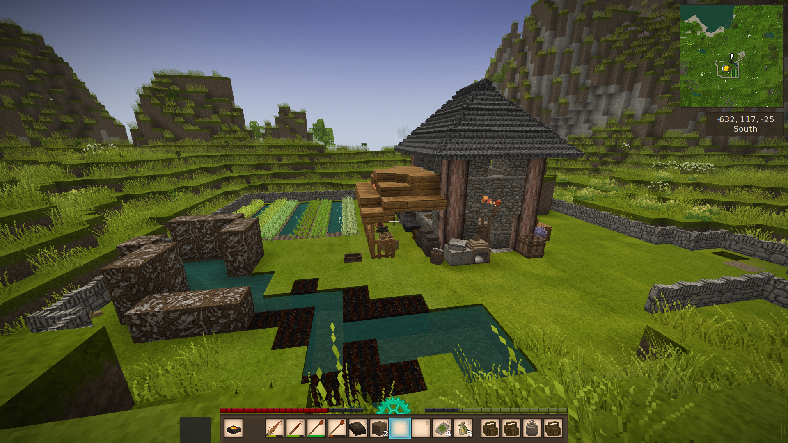
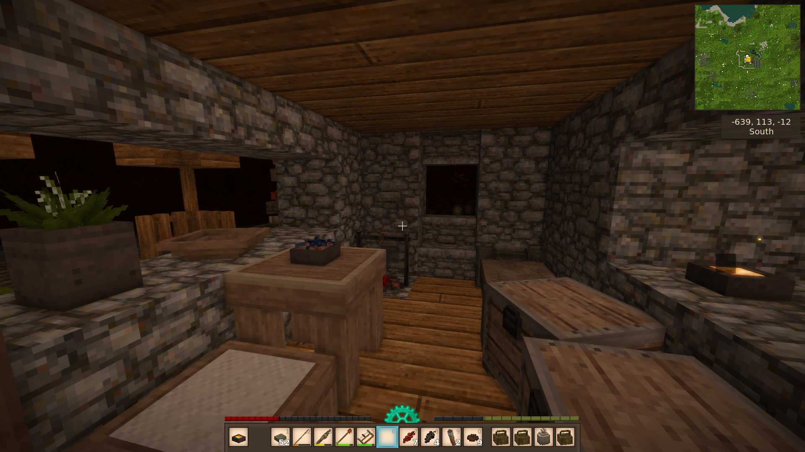
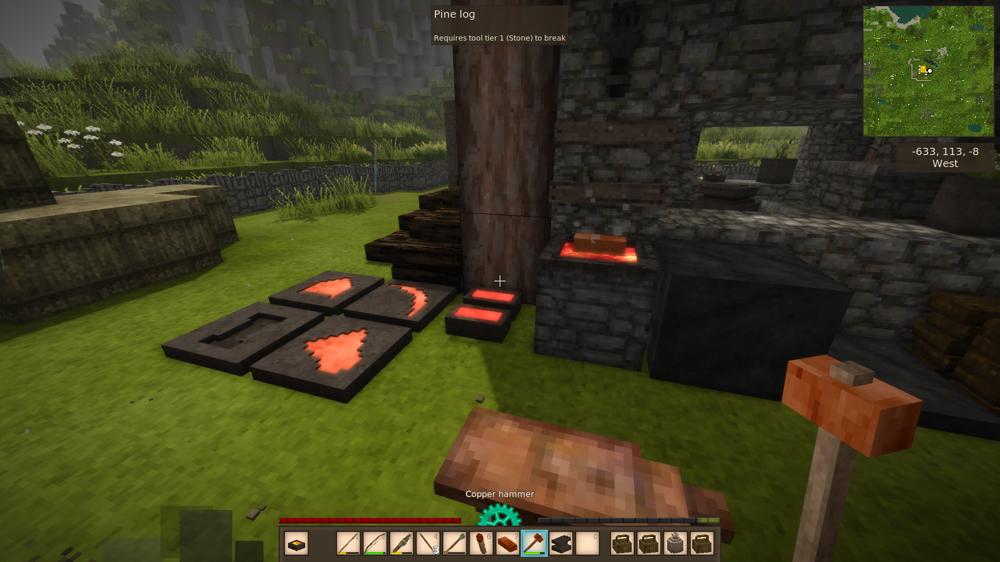
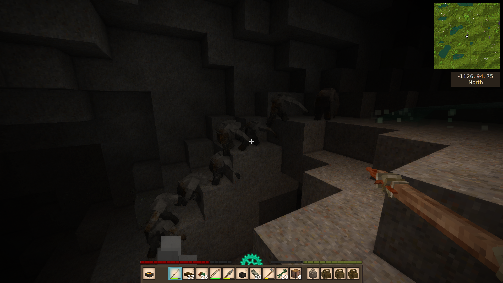

I've grown up playing video games. Ever since my parents bought our very first family PC, I've been playing
various old-school
titles ranging from: Super Mario, Prehistoric 2, Doom I-II, Outlaws.
Needless to say, I've become a huge PC enthusiast and a major part of me is still that old child who used to
play games all day long,
and explore the virtual worlds made for players to experience for themselves.
Though as of every other gamer, I have my preferred genres, and I am a sucker for the following:
-
Game Genres:
- MOBA
- RPG
- Roguelike
- Shooter
-
Favourites Games:
- Subnautica
- Frostpunk
- Vintage Story



